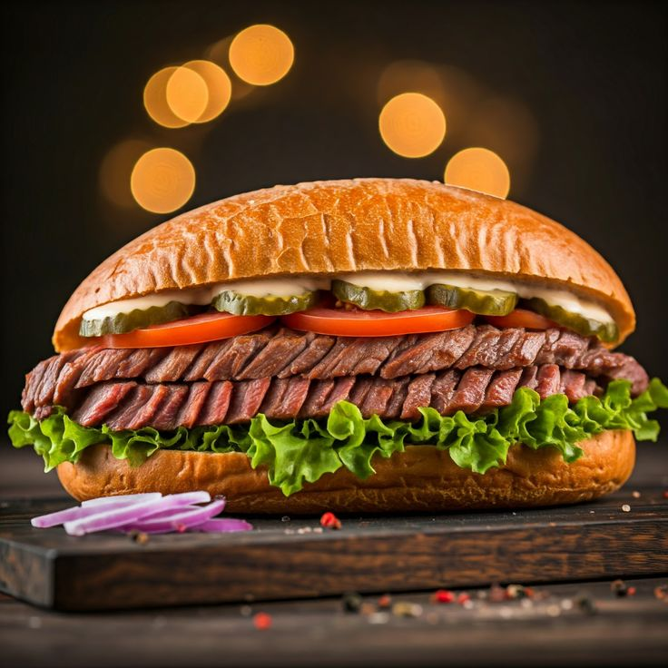
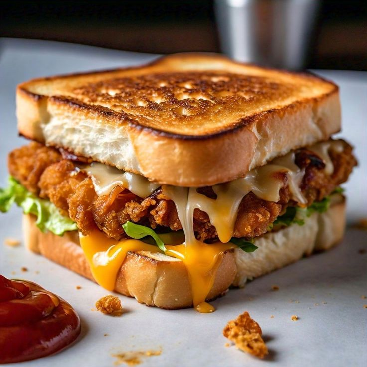

Lanches especiais que afagão o estomago.
Escolha o lanche perfeito para matar a fome.
Voltar para categoriasSelecione o melhor lanche para você

Pão, 200g de carne, Fraldinha, presunto, muçarela, bacon, milho, salada de alface e tomate, molho Bbq especial.
Pão com creme de alho, carne assada, (Fraldinha) e fatiada, muçarela, presunto, salada de alface e tomate.
Pão , carne bovina, fraldinha, muçarela, bacon e salada de alface e tomate

O sanduíche Houston é preparado com pão de brioche, frango grelhado, bacon, muçarela, queijo cheddar, presunto e salada de alface e tomate.